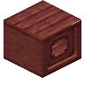

红树木星火鸟舍
Mangrove Starfire Bird Aviary
英文名: Mangrove Starfire Bird Aviary命名空间 ID:
eternal_starlight:mangrove_starfire_bird_aviary类型: 方块所属模组: Eternal Starlight资料检索: 🔎 在 MC百科 搜索「红树木星火鸟舍」合成获得 (1)


原始 JSON
{
"type": "minecraft:crafting_shaped",
"category": "building",
"key": {
"#": {
"item": "minecraft:mangrove_planks"
},
"S": {
"item": "eternal_starlight:starfire"
}
},
"pattern": [
"###",
"SSS",
"###"
],
"result": {
"count": 1,
"id": "eternal_starlight:mangrove_starfire_bird_aviary"
}
}